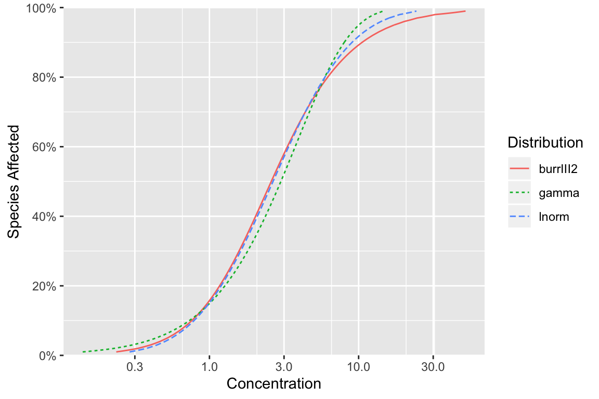
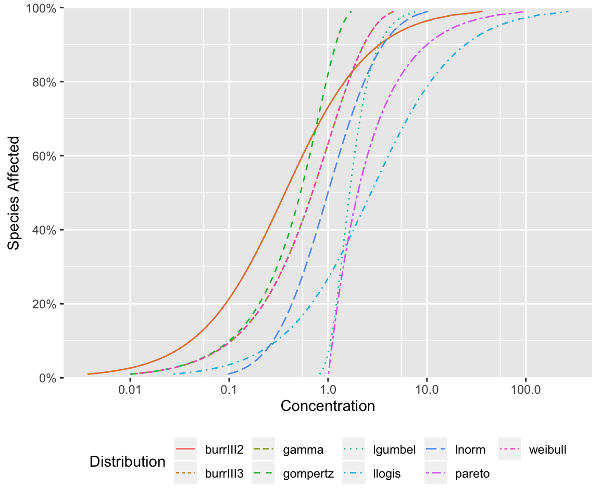

Default Distributions
By default, ssdtools fits three distributions to species sensitivity data: the Burr Type-III 2-parameter, gamma and log-normal distributions.
Default Hazard Concentrations
The hazard concentrations for the three default distributions with their default parameter values are plotted below.
ssd_plot_cdf(list(burrIII2 = NULL, gamma = NULL, lnorm = NULL))
Equally Distributed Hazard Concentrations
For comparative purposes we also plot the three default distributions with a mean of 1.648 and standard deviation of 2.16 (equivalent to a mean of 0 and standard deviation of 1 on the logarithmic scale).
mu <- 1.648
sigma <- 2.162
ssd_plot_cdf(list(burrIII2 = NULL,
gamma = list(shape = mu^2/sigma^2, scale = sigma^2/mu),
lnorm = list(meanlog = 0, sdlog = 1)))
All Distributions
For completeness the hazard concentrations for all the distributions that have been tested with ssdtools are plotted below with their default parameter values (by default the gamma and weibull hazard concentrations are identical).
ssd_plot_cdf(list(burrIII2 = NULL, burrIII3 = NULL, gamma = NULL,
gompertz = NULL, lgumbel = NULL, llogis = NULL,
lnorm = NULL, pareto = NULL, weibull = NULL)) +
theme(legend.position = "bottom")